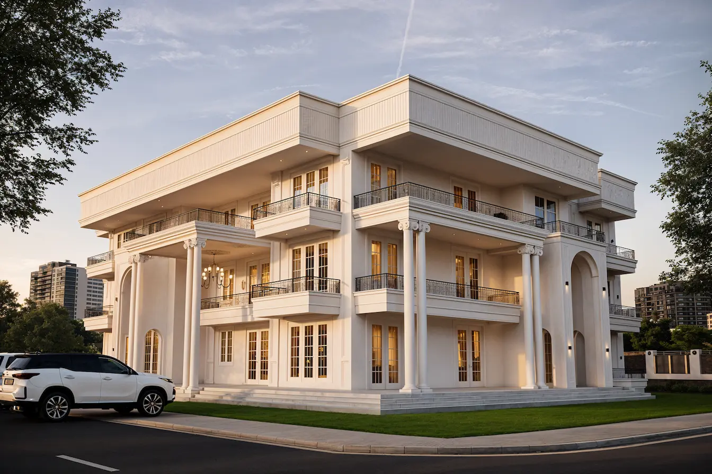
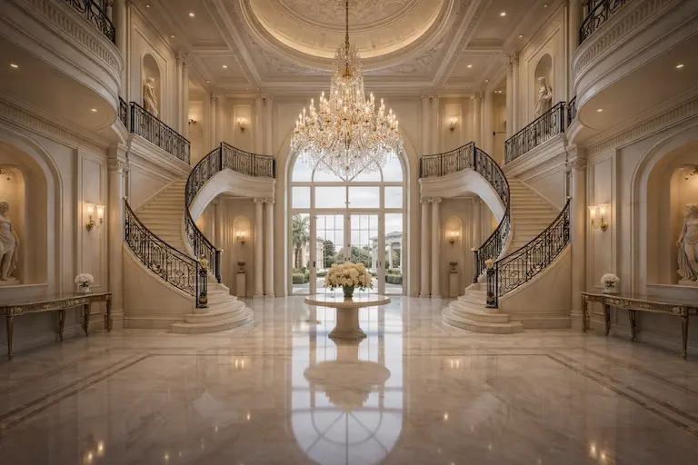

You have a plot. You have a budget. The question no one prepares you for: do you hand the brief to a builder with a standard plan — or do you engage a custom architect and go through a proper design process?
It is a question we get asked regularly at our studio, particularly from clients in Noida, Greater Noida, and the broader Delhi NCR who are planning villas, farmhouses, and premium residences. The short answer is that custom architectural services in India do more than produce better-looking drawings. They produce buildings that perform better, cost less to run, sail through municipal approvals, and — in a market like NCR — are worth meaningfully more when the time comes to sell.
Here is what the decision actually involves.
What Custom Architectural Services Actually Include
The phrase "custom architectural services" covers a wide range of engagement models in India, so it is worth being precise. At the minimum, it means a design produced specifically for your plot, your brief, and your family — not adapted from a generic template. At the full-service end, it includes every phase from initial concept through to construction completion.
From Brief to Built — The Full Scope
A full-service custom architecture engagement with a studio like ours typically covers the following stages:
- Site analysis — sun path, prevailing winds, plot orientation, setback requirements, neighbouring context
- Concept and schematic design — layout options, massing, facade character, internal zoning
- Design development — detailed floor plans, sections, elevations, material palette
- Municipal approval drawings — statutory drawings required for building permits in Noida (NADA/GDA), Delhi (MCD/DDA), Ghaziabad (GDA) and other NCR jurisdictions
- Structural and MEP coordination — working with structural engineers and MEP consultants so that architecture, structure, and services are integrated from the beginning
- Interior design integration — material finishes, joinery, lighting concept, kitchen and bathroom layouts
- Construction documentation — detailed working drawings that a contractor can actually build from
- Site supervision — periodic or full-time supervision to ensure the building is being constructed as designed
A builder's standard plan gives you a floor layout. Our full-service architecture and interior design process gives you a building designed around your specific plot, your family's life, and the climate of your site — from the first sketch to the final coat of paint.

Custom Architect vs Standard Builder Plan — The Real Comparison
Builder plans are not inherently bad. For a standard rectangular plot, a standard family configuration, and a construction budget where efficiency matters most, they can work. The problem is that most residential plots in NCR — and most Indian families — are not standard.
What a Builder's Catalogue Plan Cannot Do
Standard plans are designed to work on an average plot. The sun path on your specific site is not accounted for — no modelling of where afternoon heat falls on your west-facing living room wall in June. Plot-specific constraints go unaddressed: a narrow frontage that forces the staircase into the primary bedroom, or setback requirements in your sector that mean the standard plan will not receive approval at all.
How Indian families actually live is the other gap. Multigenerational households need spatial thinking that a catalogue plan cannot deliver. Elderly parents require ground-floor proximity. A daughter-in-law's kitchen needs connection to — and privacy from — the main living area. Children need study zones that do not bleed into adult workspaces. Over 60% of Indian households remain multigenerational, yet standard plans are designed for nuclear families in a single age bracket. Custom architecture addresses this from the first sketch.
Vastu compliance is another area where standard plans fall short. Integrating vastu from the concept stage — entrance orientation, room placement relative to cardinal directions, placement of the puja room and kitchen — is something a custom architect does from day one. Retrofitting vastu corrections into a standard plan that was never designed for them often results in compromises that satisfy no one.
Where Custom Architecture Changes the Outcome
The most measurable difference is in performance. A home designed with its orientation in mind — with deep overhangs on the south and west, cross-ventilation through the plan, thermally massive walls on exposed faces — can stay 6–8°C cooler than a poorly orientated home of identical construction. In an NCR summer that regularly touches 45°C, that translates to years of lower electricity bills and genuine comfort.
Municipal approvals are the other practical difference that clients rarely anticipate. In Noida, Delhi, Ghaziabad, and Greater Noida, building plan approvals require drawings prepared and stamped by a registered architect under the Council of Architecture. A builder's plan cannot be submitted. Clients who discover this mid-project — after they have already committed to a standard plan — lose months reworking drawings and reapplying. A custom architecture firm handles this from the beginning.
"Our custom villa design in Greater Noida had a wide eastern frontage and a narrow southern lane. We oriented the main facade east, positioned living spaces for morning light and south-east winds, and placed the garage south as a thermal buffer. The result is a home that is cooler and brighter than its neighbours — not by accident, but by design."

What Custom Architectural Services Cost in India
Transparency on fees is something most architecture firms avoid. We do not. Here is what custom architectural services actually cost in India, specifically in the NCR market.
The Council of Architecture's published scale of charges sets the guideline fee at 7.5% of the total construction cost for individual residential projects. In practice, NCR firms charge between 5% and 10% depending on scope, complexity, and experience level.
| Service Scope | Fee (per sq ft) | What's Included |
|---|---|---|
| Design + Approvals only | ₹50–100 | Concept, drawings, municipal approval submission |
| Full service | ₹150–300 | All above + construction documentation + site supervision |
To put this in concrete terms: a ₹1.5 crore construction budget at the COA guideline rate of 7.5% means an architectural fee of approximately ₹11–12 lakhs. For a 4,000 sq ft home, that is roughly ₹280–300 per sq ft on design — against a total construction cost that might be ₹3,750 per sq ft.
The comparison that matters is not the fee against zero — it is the fee against the cost of not having an architect. Mid-construction changes due to a poorly thought-out plan — walls broken and rebuilt, MEP systems rerouted, staircases moved — routinely cost ₹2–10 lakhs on a residential project. A good architect prevents both, and typically more than pays back the fee in avoided rework alone.

When Custom Architectural Services Pay Off Most
Not every project needs the same level of engagement. But when the following conditions apply, investing in full custom architectural services in India produces returns that far outweigh the fee:
- Irregular, corner, or narrow plots — Standard plans do not fit. A custom design extracts maximum usable area from difficult plot shapes.
- Premium construction budgets — If you are spending ₹2,500 per sq ft or more on construction, the appropriate design fee ensures the result reflects that investment.
- NCR climate sensitivity — Any home intended to be comfortable without 18-hour air conditioning needs climate-responsive design that only a custom process provides.
- Multigenerational households — Custom zoning for shared living, separate entrances, inter-connected yet private spaces cannot be retrofitted into a standard plan.
- Resale within 5–10 years — Bespoke home design in Noida, Greater Noida, and South Delhi consistently commands premiums over generic builder stock in the same locality.
- Any project requiring municipal approval — In NCR, this means essentially every new residential construction above a minimal plot size.

What to Look for in a Custom Architecture Firm in India
Once you have decided to engage a firm offering custom architectural services, the next question is how to evaluate who to hire. In Noida, Ghaziabad, and Greater Noida, the market has a wide range — from small draughtsmen operating as "architects" to full-service registered practices. A few things that actually distinguish them:
Council of Architecture registration is non-negotiable. Only COA-registered architects can legally prepare and stamp approval drawings in India. Ask for the COA registration number before signing anything.
Relevant typology experience matters more than general portfolio size. A firm with 20 IT park projects is not the best choice for your private villa. Look for a portfolio that includes the type of home you want to build.
Local approval knowledge is underrated. Municipal requirements vary significantly between Noida, Greater Noida, Ghaziabad, and Delhi. A firm that regularly navigates your jurisdiction's approval process — and knows the local setback norms, FAR limits, and authority contacts — saves you time and frustration.
Award recognition provides independent quality verification. Our studio's recognition at FOAID 2025 in the Conceptual Architecture category reflects peer assessment of design quality — not self-reported credentials.
Post-occupancy references are the most honest test. Ask if you can speak with a past client 12–18 months after they moved in. Firms that stand behind their work welcome that question. Our work as architects in Noida spans over a decade of residential projects in the region — we are glad to facilitate those conversations.
Frequently Asked Questions
Is hiring a custom architect worth it for a new home in India?
For most new builds in NCR — particularly those on non-standard plots, with multigenerational family structures, or with construction budgets above ₹80–100 lakhs — yes. The design fee (typically 5–10% of construction cost) is recovered through avoided rework, lower running costs from climate-responsive design, faster approvals, and meaningfully better resale value. For very simple, small-footprint builds on standard plots, a draughtsman with approval experience may be sufficient.
How much do custom architectural services cost in India?
The Council of Architecture's published guideline is 7.5% of total construction cost for individual residential projects. NCR market rates run between 5% and 10% depending on scope and experience. On a per-square-foot basis, expect ₹50–100 per sq ft for design and approvals only, and ₹150–300 per sq ft for full-service including site supervision. A ₹1.5 crore construction project typically carries an architectural fee in the range of ₹7.5–15 lakhs.
What is the difference between a custom architect and a builder's plan?
A builder's plan is a reusable floor layout produced for a generic plot. A custom architect designs specifically for your plot's orientation, your family's living patterns, the local climate, vastu requirements, and the municipal approval norms for your jurisdiction. The difference shows up in how the home performs daily — in natural light, ventilation, and comfort — and how well it holds its value over time.
Do I need an architect to get a building permit in Noida or Delhi?
Yes. In Noida (under NADA/GDA jurisdiction), Delhi (MCD/DDA), Ghaziabad (GDA), and Greater Noida (GNIDA), building plan approvals require drawings prepared and stamped by a Council of Architecture-registered architect. A builder's drawing or a draughtsman's plan cannot be legally submitted. Engaging a registered architecture firm from the outset means your approval drawings are produced as part of the design process, with no delay or rework.
How long does the custom architecture process take for a new home?
From initial brief to approval-ready drawings, a typical residential project takes 8–14 weeks depending on project complexity and how efficiently decisions are made. Municipal approval timelines in NCR add a further 4–12 weeks depending on the authority. Full construction documentation and site supervision run concurrently with construction, which is typically 12–18 months for a villa. The design phase adds time upfront, but clients who rush past it routinely lose more time resolving construction-stage problems that a proper design would have prevented.
Building Something Worth Keeping
The architectural fee is 5–10% of your construction budget. But it shapes 100% of what you build — how the rooms feel, how the building holds up in summer, how smoothly approvals go, and what the home is worth a decade from now. It is not the cost that erodes the budget. It is the thing that protects it.
If you are planning a new home, villa, or farmhouse in Noida, Delhi NCR, Greater Noida, or Uttarakhand and want to understand exactly what a custom architectural process would look like for your specific project and budget, schedule a free consultation with our studio. We work through the brief properly before we commit to anything — and so should you.